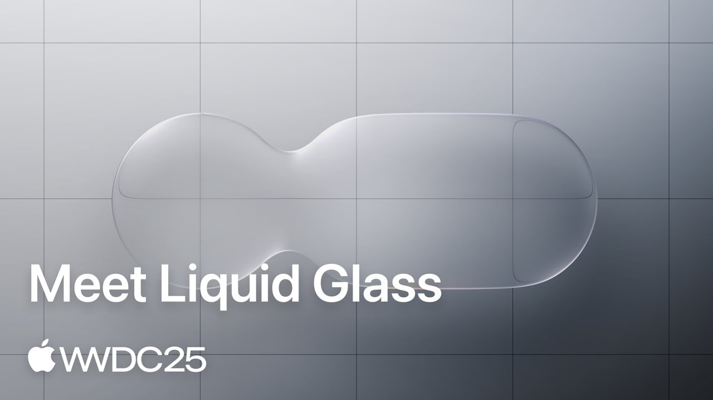

In WWDC25, Apple introduced a new GUI design called Liquid Glass. Regardless of the users reception to Apple's new style, we will try to recreate this effect using shaders, and see how it compares to similar design languages like Windows Aero
Since I don't have access to an Apple device, I can't reverse engineer the rendering behind Liquid Glass and know for a fact how it works, but the effect is simple enough that it can be reproduced.
First we need to define the Shape of our UI element, I can be a button or a panel or a even text.
We will use a mathematical function called a Signed Distance Functions, that, given any point in 2D space, returns the distance from that point to our shape.
Here we visualize the SDF of a rounded rectangle using grayscale, the darker the color is the closer the current pixel is to our shape.
You can move aroud the shape by dragging it with the mouse
Now we need to compute the normal of your rounded rectangle so that we can make it interact with light in interesting ways.
We are trying to simulate how light would get refracted by our shape as if it was made of glass. To do that we use Snell's law
Here we can visualize the refracted vector that goes from the camera towards the negative Z axis (towards the screen)
If we use this vector to sample a texture behind it, we can start seeing the "glassy" effect:
Some part of the light is reflected off the glass instead of being refracted, this gives use some specular highlight. Instead of computing realistic physical propreties of the material (using Fresnel equations for example), we will simply mix the refracted and reflected light arbitrarly
Adding the reflection to the background gives us:
And combining both refraction and reflection:
Another cool thing about SDFs is that we can smoothly "blend" two shapes by using a special function, you can read more about it here Smooth Minimum - Inigo Quilez
If you want to read more about signed distance functions, I have an article about the Raymarching algorithm which is based on 3D SDFs.
You can also find more about 2D (and 3D) SDFs on Inigo Quilez's website